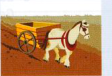
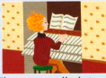

25
Work
A One man's career
When Jacob started work, he was at the very bottom of the career ladder1. He had quite a dead-end job2 doing run-of-the-mill3 tasks. He stayed there for a couple of years, but then decided he had to get out of a rut4. He pulled out all the stops5 and managed to persuade his manager that he should be given more responsibility. The deputy manager got the sack6 for incompetence and Jacob stepped into his shoes7. For several months he was rushed off his feet8 and he had his work cut out9 to keep on top of things. But he was soon recognised as an up-and-coming10 young businessman and he was headhunted11 by a rival company for one of their top jobs. Jacob had climbed to the top of the career ladder12.
1 in a low position in a work organisation or hierarchy
2 job without a good future
3 boring, routine
4 escape from a monotonous, boring situation (see picture of horse)
5 made a great effort to do something well (see picture of organ; stops increase the sound of an organ)
6 was dismissed from his job (also be given the sack)
7 took over his job
8 very busy
9 had something very difficult to do
10 becoming more and more successful
11 invited to join a new workplace which had noticed his talents
12 got to a top position in a work organisation or hierarchy


B Being busy
To be rushed off your feet is just one way of saying that you are very busy at work. Here are some other idioms which give the same idea.
C Other idioms connected with work
Plans for building the extension have been put on hold until our finances are in a better state. [left until a later date (usually used in the passive)]
The plans look great on paper, but you never know quite how things will turn out, of course. [when you read about it, but might not turn out to be so]
A lot of preparation has gone on behind the scenes for the opening ceremony for the Olympics. [out of sight, hidden, or in a way that people are not aware of, often when something else is happening publicly]
Please don't talk shop. It's too boring for the rest of us. [talk about work when you are not at work]